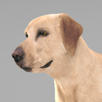

Fun fact: In 1981, a black Labrador mix named Bosco won the election to be the honorary mayor of Sunol, Calif., beating out two human candidates for the job. Bosco ran as a “Re’pup’lican” and used the slogan “A bone in every dish, a cat in every tree, and a fire hydrant on every corner."

glglororiaia1336airolg